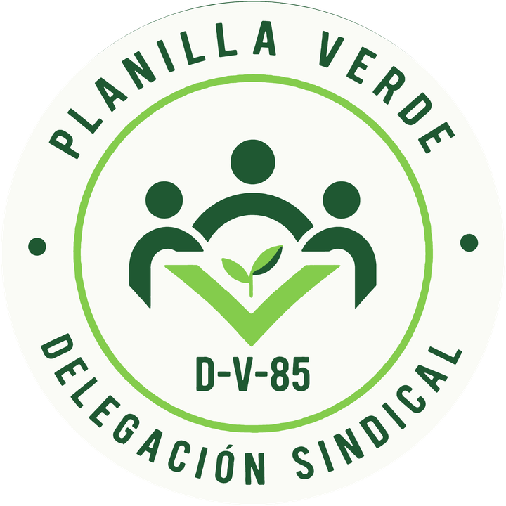

Secretaría General
María Guadalupe Lara Vera
Suplente: Joaquín A. Mézquita Garma
Instituto Tecnológico de Chetumal
Por una mejor institución y su comunidad
Principios rectores: respeto, honestidad, transparencia y justicia. Una delegación sólida, incluyente y respetuosa, al servicio de toda la base trabajadora.

Quiénes somos
Siete secretarías, cada una con su titular y suplente.
María Guadalupe Lara Vera
Suplente: Joaquín A. Mézquita Garma
Rudy Melchor Castro Teh
Suplente: Glendy Suhei Pérez Canul
Mario Jorge Ávila Quijano
Suplente: Samuel Elías Rosado Martín
Gabriela Rosas Correa
Suplente: Arsemi de Jesús Muñoz Matus
José Manuel Castro Pérez
Suplente: Heiner Darío Suárez Vázquez
José Luis Moctezuma Tejeda
Suplente: Franco Alejandro Acevedo Huerta
José Antonio Domínguez Lepe
Suplente: Víctor Antonio Chulim Tec
Equipo de trabajo
Compañeras y compañeros que respaldan el trabajo del comité en cada área.
Hacia dónde vamos
Consolidar una delegación sindical sólida, incluyente y respetuosa, que impulse la defensa de los derechos de los trabajadores, fomente la mejora continua en los servicios y promueva un ambiente laboral digno, transparente y equitativo.
Impulsar la defensa de la base trabajadora mediante una gestión sindical transparente, eficiente y cercana, que promueva la participación y la confianza y propicie la estabilidad laboral en beneficio de nuestros agremiados y sus familias.
Ser reconocidos como un comité delegacional que garantice la defensa y promoción de los derechos laborales, fortaleciendo la identidad sindical como base de la unidad, el respeto y la participación de todos los compañeros.
Talleres sobre derechos y obligaciones laborales, conformación de expedientes para promociones, información clara sobre prestaciones, seguridad social y afores, inducción al personal de nuevo ingreso, el programa “Mi Jubilación” y cursos de desarrollo humano y bienestar integral.
Plataforma de comunicación digital con la base, rendición periódica de cuentas en formato digital y escrito, y mecanismos de consulta y retroalimentación.
Integración familiar, actividades culturales y deportivas permanentes, campañas de salud integral, gestión de espacios en estancias infantiles, convenios con instituciones de salud y laboratorios, y un módulo de atención para nuestros jubilados.
Vigilancia permanente del cumplimiento de los estatutos, acceso oportuno a programas de vivienda y prestaciones, coordinación con el ISSSTE para mejorar los servicios de salud y respeto a los acuerdos sindicales.
Programas de equidad de género, participación en eventos culturales y deportivos locales, regionales y nacionales, y la organización de nuestras celebraciones tradicionales, del Día del Amor y la Amistad a la posada navideña.
Vinculación con instancias privadas y de gobierno cuidando la autonomía sindical, defensa de las conquistas alcanzadas por el SNTE y la delegación D-V-85, espacios de diálogo incluyentes e informes claros y periódicos.
Nuestra palabra
Acciones concretas que asumimos con toda la comunidad mapache.
Tarjeta Mapache: convenios con comercios y empresas para que el trabajador y su familia obtengan descuentos.
Gaceta informativa trimestral con los sucesos más relevantes en materia laboral.
Consejo de orientación para docentes que desean ingresar al Sistema Nacional de Investigadores y al Programa de Desarrollo Profesional Docente.
Apoyo y orientación al personal no docente en el proceso del SIDEPAAE.
Acompañamiento para complementar el currículum y optar a corrimientos o aumento de horas.
Seguimiento a la suspensión de descuentos de préstamos del ISSSTE para evitar afectaciones económicas.
Gestión a nivel nacional de la prima de antigüedad para el personal no docente después de la letra Z.
Material didáctico para docentes y equipo de seguridad para el personal administrativo y de servicios.
Cursos intersemestrales definidos a partir de encuestas a la base.
Torneos internos y actividades culturales para la sana convivencia de la comunidad mapache.
Pláticas y talleres para el cuidado de la salud emocional y física.
Canales de comunicación ampliados: horarios matutino y vespertino, correo, encuestas, buzón y teléfono.